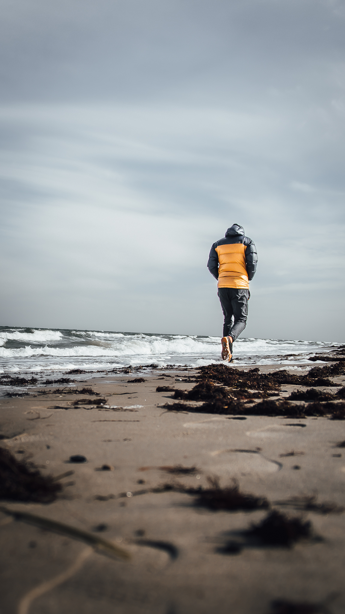
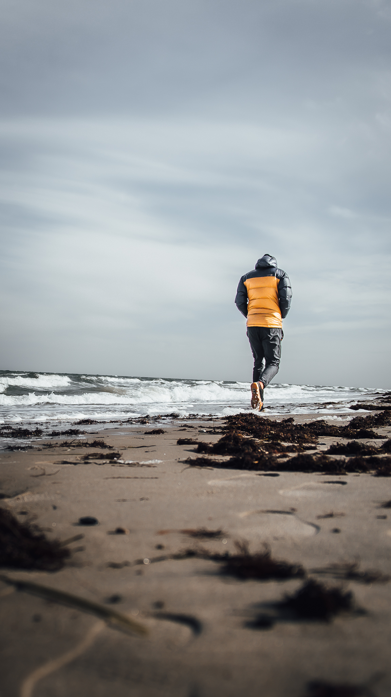

01 - Intro
I tema 01 har jeg lært mine medstuderende at kende. Vi har fået en intro til KEA som undervisningsinstitution og organisation. Jeg er blevet introduceret til multimediedesign-studiet og fået et overblik over mål, fagområder, opbygning af semestrenes rammer. Der var besøg fra tidligere studerende som fortale om deres arbejde efter afsluttet studie, hvad uddannelsen kunne bruges til, samt et par gode råd med på vejen.

 

Det lærte mig
KEA bedre at kende, hvad det er for en type institution. Det har givet mig overblik over MMD studiet, hvad jeg kan lave efter endt studie, og hvad forventningerne til mig som studerende er. Jeg har også lært mine medstuderende bedre at kende.